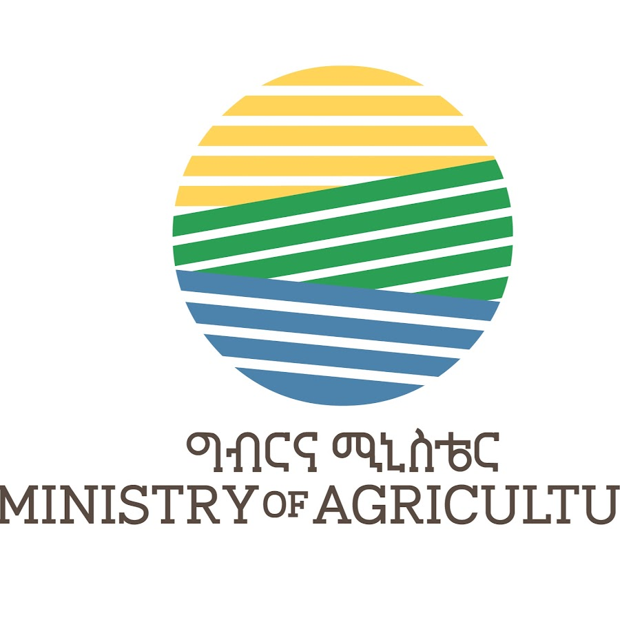
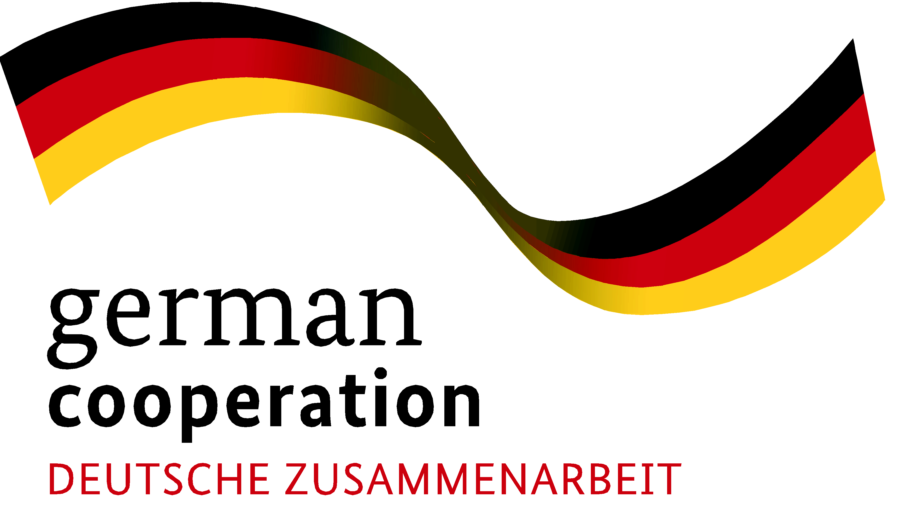
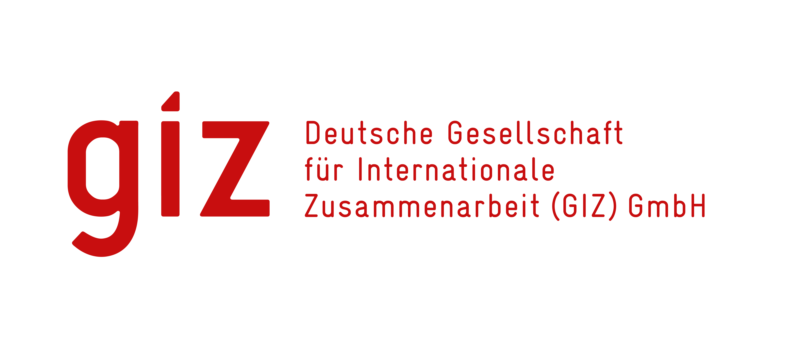

የአሠራር ሥርዓት (ጋይድላይን) ቁጥር 1/2015
ኃላፊነት የተሞላበት የግብርና ኢንቨስትመንት አተገባበር የአሠራር ሥርዓት (ጋይድላይን)
1.መግቢያ
በሀገራችን ኢትዮጵያ ቀለቀጣፋና ውጤታማ የሆነ ኃላፊትነት የተሞላበት የግብርና
ኢንቨስትመንትን ተግባራዊ በማድረግ በዘላቂነት የግብርናን ምርትና ምርታማነትን በማሳደግ
የምግብ ሉአላዊነታችንን እንዲሁም ለኢንዱስትሪ የሚሆን ግብዓት አቅርቦትን፣ የስራ እድል
ፈጠራን፣ የውጭ ምንዛሬ ግኝትን በማሻሻል ኢኮኖሚያዊ ተጠቃሚነት በላቀ ደረጃ ማረጋገጥ
ለነገ የማይባል በልዩ ትኩረት ሊተገበር የሚገባው የልማት አቅጣጫ እንደሆነ ታምኖበት
በፖሊሲያችን ላይ በማያሻማ ሁኔታ የተመላከተ በመሆኑ፤
ለዚህም በዘርፉ ለሚሠማሩ የግል ባለሀብቶች፣ መንግስታዊና መንግስታዊ ላልሆኑ ተቋማት
መዋእለ ንዋያቸውን በማፍሰስ ወደ ሥራው በስፋት እንዲገቡ ለማስቻል ምቹ ሁኔታዎችን
በመዘርጋት ማበረታታትና መደገፍ በማስፈለጉ፤
ይህም ሲሆን በዘርፉ የሚከናወን ማንኛውም ኢንቨስትመንት ዓለም አቀፍ፣ አህጉር አቀፍና
ሀገር አቀፍ - አካባቢያዊ፣ ማሕበራዊ፣ አኮኖሚያዊና ፖለቲካዊ ሁኔታዎችን አገናዝቦ ኃላፊነት
በተሞላበት መንገድ ከሚመለከታቸው አካላት ጋር በትብብርና በመቀናጀት መስራት የሚጠይቅ
በመሆኑ፤
የግብርና ሚኒስቴር በኢትዮጵያ ፌዴራላዊ ዲሞክራሲያዊ ሪፐብሊክ መንግስት የአስፈጻሚ
አካላትን ሥልጣንና ተግባር ለመወሰን በወጣው አዋጅ ቁጥር 1263/2014 አንቀጽ 20 ንዑስ
ቁትር 1፡- ወ፣ዐ እና ዠ - የተሰጠን ተግባርና ኃላፊነት መወጣት ይቻል ዘንድ፤ ይህንን የዓሠራር
ሥርዓት (ጋይድላይን) አውጥቷል፡፡
ክፍል አንድ
ጠቅላላ
1. አጭር ርዕስ
ይህ የአሠራር ሥርዓት (ጋይድላይን) “ኃላፊነት የተሞላበት የግብርና ኢንቨስትመንት አተገባበር የአሠራር ሥርዓት (ጋይድላይን) ቁጥር…... 2015” ተብሎ ሊጠቀስ ይችላል፡፡
2. ትርጓሜ
በዚህ የአሠራር ሥርዓት (ጋይድላይን) ውስጥ የቃሉ አገባብ ሌላ ትርጉም የሚያሰጠው ካልሆነ በስተቀር፡-
1/
``የህዝብ ጥቅም” ማለት በቀጥታም ሆነ በተዘዋዋሪ መንገድ ማሕበራዊና ኢኮኖሚያዊ የግብርና ኢንቨስትመንትን ለማጎልበት አግባብ ባለው የመንግስት አካል በመሬት አጠቃቀም ዕቅድ እና ማህበረሰብ ተሳትፎና ምክክር መሠረት የተሻለ የጋራ ጥቅምና ዕድገት ያመጣል ተብሎ የተወሰነ ነው፤
2/
“አካታች የግብርና ኢንቨስትመንት” ማለት በተናጠልም ሆነ በቅንጅት - በመንግስት፣ በአካባቢው ማህበረሰብ፣ በሀገር ውስጥም ሆነ በውጪ ባለሀብት፣ በህብረት ሥራ ማህበራት፣ በግብርና ምርት ውል እና በመንግስት የልማት ድርጅት የሚተገበር ኢንቨስትመንት ነው፤
3/
“የግብርና ኢንቨስትመንት” ማለት በሰብል፣ በሆርቲካልቸር፣ በእንስሳት እና በደን ዘርፍ አዳዲስ የግብርና ኢንቨስትመንት ለማቋቋም ወይም ነባር የግብርና ኢንቨስትመንትን ለማስፋፋት ወይም ለማሻሻል የሚደረግ የካፒታል ወጪ ነው፡፡
4/
“ኃላፊነት የተሞላበት የግብርና ኢንቨስትመንት” ማለት የአካባቢውን ማህበረሰብ የመሬት ይዞታ ባለቤትነትን የሚያከበር፤ የአካባቢ ደህንነትን በዘላቂነት የሚያረጋግጥ፤ ሰብዓዊ መብቶችን እና የሴቶችን እኩልነትን የሚያከብር፤ የምግብ ዋስትናን የሚያረጋግጥ፤
ግልጽ አሰራርና ተጠያቂነትን የሚያሰፍን፤ ስራውን በታላቅ የስራ ስነምግባር የሚመራና ከማህበረሰቡ ጋር በመረዳዳት እና በጋራ ተጠቃሚነት ላይ የተመሰረተ የሀገሪቱን ህገ በማክበር ዓለም አቀፍ መርሆዎችን የሚተገብር ኢንቨስትመንት ነው፤
5/
“የግብርና ምርት ውል” ማለት በግብርና ምርት አምራች እና አስመራች መካከል፡- በጥሬው ተመርቶ እና ወይም ተዘጋጅቶ የሚቀርብ የሰብል፣ የመኖ፣ የእንስሳት፣ የዓሳ፣ የሀር ምርት፣ ዘር እና የቁም እንስሳትን ለማማረት የሚደረግ ስምምነት ነው፤
6/
“የምግብ ሉአላዊነት” ማለት ህዝቦች ዘላቂ በሆነ የግብርና አመራረት ስርዓት በመከተል የሚኖሩበትን አካባቢ ስነምህዳር ሳይጎዳ ጤናማ፣ ባህላዊና ተስማሚ የሆነ በሰውልጆች መካከል ማንኛም ልዩነት ሳይደረግ የራሳቸውን ምግብ የመወሰንና የማግኘት መብት ነው።
3. የተፈጻሚነት ወሰን
ይህ የአሠራር ሥርዓት (ጋይድ ላይን) በኢትዮጵያ ፌዴራላዊ ዲሞክራሲያዊ ሪፐብሊክ መንግስት የአስፈጻሚ አካላትን ሥልጣንና ተግባር ለመወሰን በወጣው አዋጅ ቁጥር 1263/2014 ለግብርና ሚኒስቴር በተሰጠው ልክ በኢትዮጵያ ውስጥ በሚካሄድ ማንኛውም የግብርና ኢንቨስትመንት ሁሉ ላይ ተፈጻሚ ይሆናል።
4. የአሰራር ሥርዓቱ (የጋይድ ላይኑ) ተጠቃሚ ባለድርሻ አካላት
በቀጥታ በግብርና ሚኒስቴር እና በተጠሪ ተቋማት ስር ያሉ መስሪያ ቤቶች፣ በግብርና ኢንቨስትመንት ሥራ ላይ የሚሰማሩ ወይም የተሰማሩ ግለሰቦች እና መንግስታዊና መንግሰታዊ ያለሆኑ ድርጅቶችን ያጠቃልላል፡፡
5.ዓላማ
የዚህ የአሰራር ሥርዓቱ (የጋይድ ላይኑ) ዋና ዓለማ ሀገራችን በዘላቂነት ከግብርና ኢንቨስትመንት በላቀ ደረጃ ተጠቃሚ እንድትሆን፤ በዘርፉ የሚከናወን ማንኛውም ዓይነት ኢንቨስትመንት፡- ኃላፊነት በተሞላበት፣ ዓለም አቀፍ፣ አህጉር አቀፍና ሀገር አቀፍ - አካባቢያዊ፣ ማሕበራዊ፣ አኮኖሚያዊና ፖለቲካዊ ሁኔታዎችን ባገናዘበ መልኩ እንዲሆን የሚያስችል፤ ግልጽና ቀልጣፋ የአሠራር ሥራዓትን መዘርጋት ነው፡፡
6. መርሆዎች
በሀገራችን የሚካሄድ ማንኛውም የግብርና ኢንቨስትመንት ቀጥሎ በዝርዝር የተቀመጡትን መርሆዎች መሰረት አድርጎ መሆን አለበት፡-
1/
ዓለም አቀፍ፣ አህጉር አቀፍና ሀገር አቀፍ - አካባቢያዊ፣ ማሕበራዊ፣ አኮኖሚያዊና ፖለቲካዊ ሁኔታዎችን ያገናዘበ ኃላፊነት የተሞላበት የግብርና ኢንቨስትመንት ማካሄድ፤
2/
በዘላቂነት የህዝብን የጋራ ተጠቃሚነት የሚያረጋግጥ የግብርና ኢንቨስትመንት እውን ማድረግ፤
3/
ዘላቂ የሆነ የአካባቢና የተፈጥሮ ሀብት አጠቃቀምና አያያዝን የተከተለ የግብርና ኢንቨስትመንት ተግባራዊ ማድረግ፤
4/
ኃላፊነት ለተሞላበት የግብርና ኢንቨስትመንት ምቹ የሆኑ የሕግ ማእቀፎችን፣ የአሠራር ሥርዓቶችን፣ ተቋማዊ አደረጃጀቶች፣ አሠራሮች እና ሌሎች አስቻይ ሁኔታዎችን መፍጠር፤
5/
የሚመለከታቸው ባለድርሻ አካላትን የሚያሳትፍ፣ ግልጽ፣ ፍትሃዊ፣ ኃላፊነትና ተጠያቂነት ያለበት በዘላቂ የመሬት አጠቃቀም ዕቅድ እና በጋራ መግባባት በተደረሰ ውሰኔ ላይ ተመሰርቶ የሚተገበር የግብርና ኢንቨስትመንት ማካሄድ፤
6/
በቀላሉ ተገኝና ተደራሽ የሆነ በማዕከላዊ ቋት የተሰበሰበና የተደራጀ የግብርና ኢንቨስትመንት መረጃ ማጎልበት፤
7/
ዜጎች በመሬት ሀብት ላይ ያላቸውን መብት ያከበረና ሕጋዊ በሆነ መንገድ ብቻ የሚካሄድ የግብርና አንቨስትመንት እውን ማድረግ፤
8/
ኃላፊነት የተሞላበት የግብርና ኢንቨስትመንት የሚበረታታበት የማትጊያ ስርዓት መዘርጋት፤
9/
ኃላፊነት ለተሞላበት የግብርና ኢንቨስተመንት ትግበራ ዘላቂ የሆነ የክትትል፣ግምገማና ቁጥር ሥራዓት መዘርጋት።
ክፍል ሁለት
ኃላፊነት የተሞላበት የግብርና ኢንቨስትመንት አተገባበር ሂደት
ሀገራችን በዘላቂነት ከግብርና ኢንቨስትመንት በላቀ ደረጃ ተጠቃሚ እንድትሆን፤ የግብርና ሚኒስቴር በዘርፉ ለሚሠማሩ ኢንቨስተሮች ቀጥሎ በዝርዝር በተቀመጠው መሠረት ድጋፍና ማበረታቻ እንዲያገኙ ያደርጋል፣ ከሚመለከታቸውም የፌደራል እና የክልል አካላት ጋር ቅንጅት በመፍጠር በትብብር ይሠራል፡፡
7. ኃላፊነት የተሞላበት የግብርና ኢንቨስትመንት
ሀገራችን በዘላቂነት ከግብርና ኢንቨስትመንት በላቀ ደረጃ ተጠቃሚ እንድትሆን በዘርፉ የሚከናወን ማንኛውም ኢንቨስትመንት፡-
1/ ዓለም አቀፍ፤
2/ አህጉር አቀፍ፤ እና
3/ ሀገር አቀፍ፤
አካባቢያዊ፣ ማሕበራዊ፣ አኮኖሚያዊና ፖለቲካዊ ሁኔታዎችን ያገናዘበ ኃላፊነት የተሞላበት መሆን አለበት።
8. የጋራ ተጠቀሚነት
በየትኛውም ደረጃ የሚከናወን ማናቸውም የግብርና ኢንቨስትመንት፡-
1/ የህዝቡንና የባለሀብቱን የጋራ ኢኮኖሚያዊ ጥቅም የሚያረጋግጥ፤
2/ የአካባቢውን የተፈጥሮ ሀብት በዘላቂነት የሚጠበቅ፤
3/ ለአካባቢው ማህበረሰብ ሰፊ የሥራ ዕድል የሚፈጥርና ቅድሚያ የሚሰጥ፤
4/ ሀገር አቀፍ እና ዓለም አቀፍ የሰራተኞች ቅጥርና አያያዝ ሕግን የሚከተል፤
5/ የተሻሻለ የግብርና የአሰራር ሥርዓትና ቴክኖሎጂን የሚተገብር፤
6/ ለሀገር በቀልና ከውጪ ለሚገኝ እውቀትና ቴክኖሎጂ ሽግግር የድርሻውን ሚና የሚወጣ፤
7/ በማሀበረሰቡ በፍላጎት ላይ የተመሰረተ አቅም ተኮር ማህበራዊ፣ ኢኮኖሚያዊና አካባባያዊ አስተዋዕዎ የሚያበረክት ሊሆን ይገባል፡፡
9. ዘላቂና ቀጣይነት
በየትኛውም ደረጃ የሚከናወን የግብርና ኢንቨስትመንት ዘላቂና ቀጣይ የሆነ፡-
1/ የህዝብና በዘርፉ የተሰማሩ ባለሃብቶችን ተጠቃሚነትን፣
2/ የአካባቢና የተፈጥሮ ሀብት ደህንነትን፤
3/ የማህበራዊ እና አካባቢያዊ እሴቶች ጥበቃን በተመለከተ ልዩ ትኩረት ሰጥቶ የሚተገበር መሆን አለበት፡፡
10. ምቹ ሁኔታ
በሀገራችን የግብርና ኢንቨስትመንት ቀልጣፋና ውጤታማ በሆነ መንገድ መከናውን እንዲችል የሚከተሉትን ምቹና አስቻይ ሁኔታዎች በተሟላ መልኩ ሊዘረጉ ይገባል፡-
1/ ከዓለም አቀፍ መርሆዎችና ከሀገራዊ ነባራዊ ሁኔታ ጋር የሚጣጣሙ - አግባብነት ያላቸው የፖሊሲ፣ ስትራቴጂ፣ ሕግና የአሠራር ሥርዓት ማእቀፎች፤
2/ ወጥ ተናባቢ እና በጠንካራ ግንኙነት ላይ የተመሰረተ ተቋማዊ አደረጃጃት እና አሠራሮችን፤
3/ ግልጽና አካታች የኢንቨስትመንት አማራጮች፤
4/ በቀላሉ ተገኝና ተደራሽ የሆነ የግብርና ኢንቨስትመንት መረጃ ማዕከላዊ ቋት፤
5/ የድጋፍና ክትትል ሥራዓቶች፤
6/ ግልጽ የሆኑ የአከባቢዉን ማህበረሰብ ልምድና ባህል መሰረት ያደረጉ የግጭትመፍቻ መንገዶችን እና ዘዴዎች።
11. የመረጃ ተገኝነትና ተደራሽነት
የግብርና ኢንቨስትመንት መረጃ በማዕከላዊ የመረጃ ቋት ተደራጅቶ መከማቸት እና በመረጃ ተጠቃሚው ሲፈለግ በቀላሉ መገኝትና ተደራሽ መሆን አለበት፡፡
1/ለግብርና ኢንቨስትመንት የሚውል መሬት መረጃ፡-
ሀ) ለግብርና ኢንቨስትመንት አገልግሎት የተለየ መሬት መረጃ ቢያንስ የሚከተሉትን ዝርዝር ነጥቦች መያዝ አለበት፡-
1) የመሬቱን ወይም የማሳውን ስፋት በሄክታር፤
2) የመሬቱን አቀማመጥ፣
3) የዕፅዋት ሽፋን፣
4) የአፈር ዓይነትና የለምነት ደረጃ፣
5) ከባሀር ጠለል በላይና በታች ያለው ከፍታና ዝቅታ፣
6) የአየር ንብረት ሁኔታ፣
7) የዝናብ ስርጭትና መጠን፣
8) በመስኖ ወይም በዝናብ የሚለማ መሆኑ፣
9) የሙቀት መጠንና ስርጭት፣
10) መሬቱ የሚገኝበትን ክልል፣ ዞን፣ ወረዳና ቀበሌ፣ የመሬቱ ሰሜንና
ምስራቅ ኮኦርዲኔት፤
11) በመሬቱ ላይ ሊለማ የሚችለው የኢንቨስትመንት ዓይነትና
ተስማሚነት፤ በምርት ዓይነት ተለይቶ፤
12) የመሬቱ መለያ ካርታ ቁጥር።
ለ) የመሬት መረጃን ወቅታዊ የማድረግ ሂደት የሚከተሉትን ነጥቦች ከግንዛቤ ውስጥ ማስገባት ይኖርበታል፡-
1) የመሬት መረጃ ወቅታዊ የማድረግ ሂደት በየደረጃው በወረዳ፣ በዞን፣በክልልና በፌደራል ደረጃ የተደራጀው የመሬት መረጃ፤ በመጠንና ዓይነት ተመሳሳይ መሆን አለበት፤
2) የመሬት መረጃ ላይ ለውጥ ሲኖር በየደረጃው በወቅቱ መረጃን በመለዋወጥ ከፌደራል የመረጃ ቋት ጋር ማቆራኘት ያስፈልጋል፤
3) የባለሀብቶች አጠቃላይ መረጃ ወቅታዊ መሆን ያለበት ሲሆን፤ አዲስ ስራ የጀመሩ ባለሀብቶች፤ ውል ያቋረጡ ባለሀብቶች ወዘተ መረጃም በተመሳሳይ ሁኔታ ወቅታዊ መደረግ ይኖርበታል።
2/ የግብዓትና ቴክኖሎጂ መረጃ
የግብርና ግብዓትና ቴክኖሎጂ መረጃ በአግባቡና በወቅቱ አደራጅቶ ተደራሽ ማድረግ አስፈላጊ ሲሆን በመሰረታዊነት የሚከተሉትን መረጃዎች መያዝ ይኖርበታል፡-
ሀ) የአፈር ማዳበሪያ ግብዓት መረጃ
1) አካባቢያዊ ፍላጎትን መሠረት ያደረገ በመጠንና በአይነት፤
2) በጥቅም ላይ የዋለ በመጠንና በአይነት፤
3) የግብዓት አጠቃቀም ሂደትን የሚያሳይ መረጃ፤ (Treand analysis)
ለ) የምርጥ ዘር ግብዓት መረጃ
1) አካባቢያዊ ፍላጎትን መሠረት ያደረገ በመጠንና በአይነት፤
2) በጥቅም ላይ የዋለ በመጠንና በአይነት፤
3) የግብዓት አጠቃቀም ሂደትን የሚያሳይ መረጃ፤ (Treand analysis
ሐ/ የአግሮ- ኬሚካል ግብዓት መረጃ
1) አካባቢያዊ ፍላጎትን መሠረት ያደረገ በመጠንና በአይነት፤
2) በጥቅም ላይ የዋለ በመጠንና በአይነት፤
3) የግብዓት አጠቃቀም ሂደትን የሚያሳይ መረጃ፤ (Treand analysis)
መ/ የግብርና ሜካናይዜሽን መሳሪያዎችና ተሽከርካሪ መረጃ
1) አካባቢያዊ ፍላጎትን መሠረት ያደረገ የግብርና ሜካናይዜሽን
አቅርቦት በመጠንና በአይነት፤
2) በሥራ ላይ ያለና በጊዜያዊነት ከአገልግሎት ውጪ የሆነ የግብርና
ሜካናይዜሽን መሳሪያዎች በመጠንና በአይነት፤
3) ከቀረጥ ነፃ የገቡ የግብርና ሜካናይዜሽን መሳሪያዎችና ተሽከርካሪ
ለታለመለት ዓላማ መዋሉን የሚያሳይ መረጃ፤
4) የግብርና ሜካናይዜሽን መሳሪያዎችና ተሽከርካሪዎች አጠቃቀም ሂደትን
የሚያሳይ መረጃ፤ (Treand analysis)
3/ የግብርና ኢንቨስትመንት ማትጊያ መረጃ
ሀ) በግብርና ኢንቨስትመንት የተሠማሩና የሚሠማሩ ባለሀብቶችን ለማበረታታት የሚያስችል የማትጊያ ሥርዓት መረጃ ማደራጀት ያስፈልጋል፤
ለ) የማትጊያ መረጃው ቢያንስ የሚከተሉትን ዝርዝር ነጥቦች መያዝ አለበት፡
1) የሙያ፣ የቴክኒክና የአቅም ግንባታ፤
2) የፋይናንስና ብድር አቅርቦት፣
3) የገቢግብር እፎይታ፣
4) ከቀረጥ ነጻ ተጠቃሚነት፣
5) የግብዓት አቅርቦት፤ እና
6) የመሰረተ ልማት አገልግሎት፤እና
7) እንደየአስፈላጊነቱ እየታየ የሚጨመሩ የማትጊያ መረጃዎቸ ናቸው፡፡
4/ የመሠረተ ልማት መረጃ
የመሰረተ ልማት አገልግሎት አቅርቦትን በተመለከተ በመረጃ ላይ የተመሰረተ ውሳኔዎችን እና የማስተባበር ስራ ለመስራት እንዲቻል የተደራጀ እና ወቅታዊ የሆነ መረጃ ያስፈልጋል፤ የመሰረተ ልማት መረጃው ቢያንስ የሚከተሉትን ዝርዝር ነጥቦች መያዝ አለበት፡-
1) የቴሌኮምንኬሽን፣ መብራትና ውሃ አገልግሎቶች ዓይነት፣ ደረጃ፣ መጠን እና ጥራት፤
2) የመንገድ መሰረተ ልማት (ከወረዳ ፣ዞንና ክልል ማዕከላት የሚያገኛኙ) አይነት፣ ደረጃና ርቀት፤
3) ከገበያ ማዕከላት የሚያገኛኙ መንገዶች አይነት፣ ርቀት የሚገኝበት ደረጃ፤
4) የትራንስፖርትና ሎጂስቲክስ አገልግሎቶች (የየብስ፣ የባህር፣ የባቡር፣ የአየር ትራንስፖርትና ሎጂስቲክስ) ፤
5/ የግብይት መረጃ
የግብዓትና ምርት ግብይት ለማሳለጥ እንዲቻል በመነሻነት የተደራጀ መረጃ ያስፈልጋል፤ የግብይት መረጃው ቢያንስ የሚከተሉትን ዝርዝር ነጥቦች መያዝ አለበት፡-
1) የምርት ፍላጎትና አቅርቦት (የአካባቢ፣ አገራዊና ኤክስፖርት
ገበያዎች) ፤
2) የምርት ገበያ ከባብያዊና ዓለም አቀፍ ወቅታዊ ዋጋ፤
3) የአካባቢ፣ አገራዊና የውጪ አማራጭ ገበያዎች፤
4) የግብዓትና የምርት ገበያ ትስስር ዕድሎች (ኢንዱስትሪ፣ ሸማች፣
ዘር አቅርቦት፣ ኮንራትራት እርሻ) ፤
5) የገበያ አገልግሎት (የምርት ማዘጋጃ፣ ማሸጊያ፣ ማከማቻ፤
6) የግብይት ተዋናዮች (ቸርቻሪ፣ አቅራቢ፣ ጅምላ፣ ኤክስፖርተር፣
ኮሚሽን ኤጀንቶች፣ አምራች) ፤
7) የምርት ጥራትና ደረጃ፤
8) የምርት ጥራት ደረጃ ማረጋገጫ የምስክር ወረቀት (ሰርተፍኬሽን)፡፡
12. አሳታፊነት
1/ በግብርና ኢንቨስትመንት የመሬት ልየታ፣ ማረጋገጥና ማስተላለፍ ሂደት ላይ ከጅምሩ ጀምሮ ለኢንቨስትመንት የተፈለገው ቦታ ባለበት ከተማ ወይም በወረዳ ውስጥ የሚገኙ መንግሰታዊና መንግስታዊ ያልሆኑ ባለድርሻ አካላትን ፡
ሀ) የግብርና ኢንቨስትመንት በሚመለከት የማስፈጸም ሥልጣን የተሰጣቸውን ተቋማት፤
ለ) የመሰረተ ልማት ዘርጊ ተቋማትን፣
ሐ) የፍትህ አካለትን፣
መ) የሲቪክ ማሕበራትን እና ከስራው ጋር ተያያዥነት ያላቸው መሰል ባለድርሻ አካለትን፤
ሠ) በሚለማው መሬት ላይ በቀጥታም ሆነ በተዘዋዋሪ መንገድ መብትና ጥቅም ያላቸውን ውጤቱ የሚነካቸውን የአካባቢው ማህበረሰብ መወያትና መሳተፍ አለባቸው፤
ረ) የግብርና ኢንቨስትመንት መሬት ልየታና አፈጻጸም በዕቅድ በየጊዜው ክትተል እየተደረገበት ከባለድርሻ አካላት ጋር የጋራ መድረክ በማዘጋጀት መገምገም አለበት፤
ሰ) የጋራ ውይይት መድረኩ የጻታ፣ የዕድሜና የአካል ጉዳት ሁኔታ ያገናዘበ መሆን አለበት፡፡
2/ የግብርና ኢንቨስትመንት መሬት ልማት አፈጻጸም በዕቅድ በየጊዜው ክትተል
እየተደረገበት ከባለድርሻ አካላት ጋር የጋራ የውይይት መድረክ በማዘጋጀት መገምገም አለበት፤
3/ የውይይት መድረኩም የሚከተለውን ሥነስርዓት ተከትሎ የፈጸማል፡-
ሀ) ጥሪው ለሚመለከታቸው አካላት ሁሉ በደብዳቤ ወይም በጋዜጣ ወይም በሬዲዮና በቴሌቪዥን ወይም በድህረገጽ ወይም በሚመለከታቸው አካለት በኩል መድረስ አለበት፤ ለመድረሱም ማረጋገጫ መኖር አለበት፤
ለ) በመጀመሪያ በተደረገ ጥሪ መሰረት ውይይት ለመካሄድ ቢያነስ ከሚመለከታቸው አካለት ¾ መገኝት አለበት፤
ሐ) በዚሁ አንቀጽ፣ ንኡስ አንቀጽ፡- 3/ ለ) መሰረት በተደረገው ጥሪ ¾ ካልተገኝ ሁለተኛ ጥሪ ተደርጎ ቢያነስ ½ (ግማሸ) ያህሉ ተገንቶ ውይይቱ መካሄድ አለበት፤
መ) በንኡስ አንቀጽ፡ 3/ ሐ) በተደረገው ጥሪ ግማሽ የሚሆኑት ካልተገኝ ሶስተኛ ጥሪ ተደርጎ በተገኙት አካለት ውይይቱ ይካሄዳል፤
ሠ) ከላይ የተገለጸው እንደተጠበቁ ሆኖ ትልልቅ ሀገራዊና አስቸኳይ የግብርና ኢንቨስትመንትን የተመለከተ ጉዳዮች ሲኖር በልዩ ሁኔታ ውይይቱ ይካሄዳል።
13. ለዜጎች በሕግ የተሰጠን መብትን ማክበር
የግብርና ኢንቨስትመንት ዜጎች በማህበራዊ፣ ኢኮኖሚያዊ እና አካባበዊ ደህንንት ጋር በተያያዘ በሕግ የተሰጣቸውን መብት ባከበረ መንገድ ብቻ መከናወን አለበት፡፡
14. ግልጽነት እና ተገማችነት
ማንኛውም የግብርና ኢንቨስትመንት የሚተገበርበት አሠራር፡- የፕሮጀክት መረጣ፣ የባለሀብቶች ምልመላ፣ የፈቃድ አሰጣጥ ወይም ክልከላ፣ የማትጊያ ሥርዓት ተጠቃሚነት፣ የክትትል፣ ግምገማና ዕውቅና አሰጣጥ መስፈርት ለተጠቃሚው ግልጽና ተገማች መሆን አለበት፤
15. የማበረታቻ ወይም ማትጊያ ስርዓት መዘርጋት
1/ ሀገራችን በዘላቂነት ኃላፊነት ከተሞላበት የግብርና ኢንቨስትመንት በላቀ ደረጃ ተጠቃሚ እንድትሆን ቀልጣፋና ውጤታማ የሆነ የማትጊያ ሥርዓት መዘርጋት ያስፈልጋል፤
2/ የሚዘረጋውም የማትጊያ ሥርዓት የሚከተሉትን ዋና ዋና ስልቶች ያቀፈ ሊሆን ይገባል፡
ሀ) ሙያዊ የቴክኒክና የአቅም ግንባታ ድጋፎች፤
ለ) የገንዘብ ማበረታቻዎች፤
ሐ) የግብዓት አቅርቦት ድጋፎች፤ እና
መ) የመሰረተ ልማት ግንባታ ድጋፍ፡፡
16. የክትትል፣ ድጋፍ፣ ግምገማና ቁጥጥር ስርዓት
1/ በዘላቂነት ከዘርፉ ተጠቃሚ ለመሆን ኃላፊነት ከተሞላበት የግብርና ኢንቨስትመንት መርህ ጋር የሚጣጣም ክትትል፣ ድጋፍ፣ ግምገማና ቁጥጥር መደረግ አለበት፤
2/ ክትትልና ድጋፍ በግብርና ሚኒስቴር የሚመለከተው ሥራ ክፍል መሪነት፡- በተጠሪ ተቋማት፣ በሲቪክ ማህበራት፣ በባለሀብቶች ማህበራት፣ በባለድርሻ አካላት፣ መንግስታዊ ባልሆኑ ተቋማት ጥምረት በዘርፉ ለተሰማሩ ባለሀብቶች መደረግ አለበት፤
3/ የቁጥጥርና ግምገማ ሂደቱ ከላይ በዚህ አንቀጽ ንዑስ አንቀጽ 2/ በተዘረዘሩ ባለድርሻ አካለት በዘርፉ የተሰማሩ ኢንቨስተሮቹ ወይም ተወካዮቻቸው በተገኙበት ይካሄዳል፤
4/ በሚመለከተው ስራ ክፍል - ለክትትል፣ ድጋፍ፣ ግምገማና ቁጥጥር የሚከተሉት ቅድመ ዝግጅቶች መደረግ አለባቸው፡-
ሀ) በክልል ፣ ዞን እና ወረዳ ደረጃ የሚገኙ የባለሀብቶች ቢዝነስ ፕላንና ዓመታዊ ዕቅድ፣ ማህበራዊና አካባቢያዊ ተጽዕኖ ግምገማ ጥናት እና ሌሎች ጠቃሚ ዝርዝር መረጃዎችን ማደራጀት፤
ለ) በክትትል ድጋፍ ግምገማና ቁጥጥር የሚሳተፉ ባለድርሻ አካላትን መለየት፣
ሐ) የመከታተያ ቼክ ሊስት ማዘጋጀት እና ወቅታዊ ማድረግ፤
መ) ዝርዝር የሥራ ፕሮግራም በማዘጋጀት የጋራ አድርጎ ለሚመለከታቸው ሁሉ አስቀድሞ ማሳወቅ ናቸው።
17. የአሠራር ሥርዓቱ (ጋይድ ላይን) የሚጸናበት ጊዜ
ይህ የአሠራር ሥርዓት (ጋይድ ላይን) ከ--------------------------ቀን ----------- ዓ.ም ጀምሮ ተፈጻሚ ይሆናል፡፡


